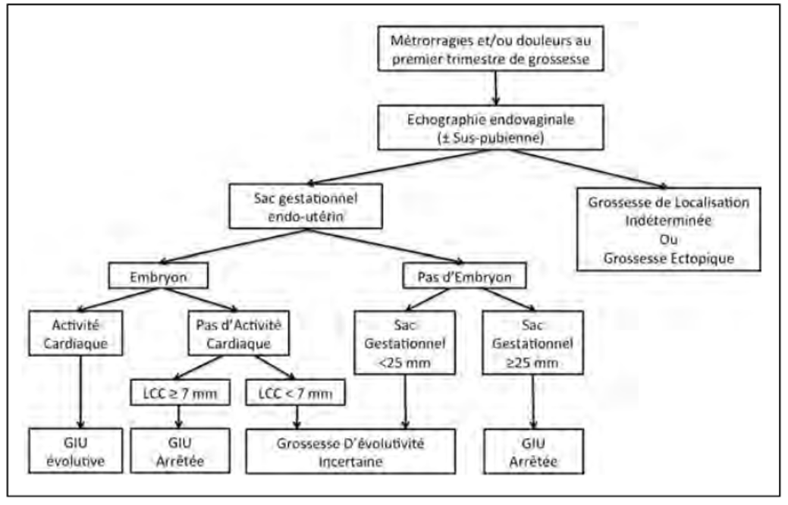
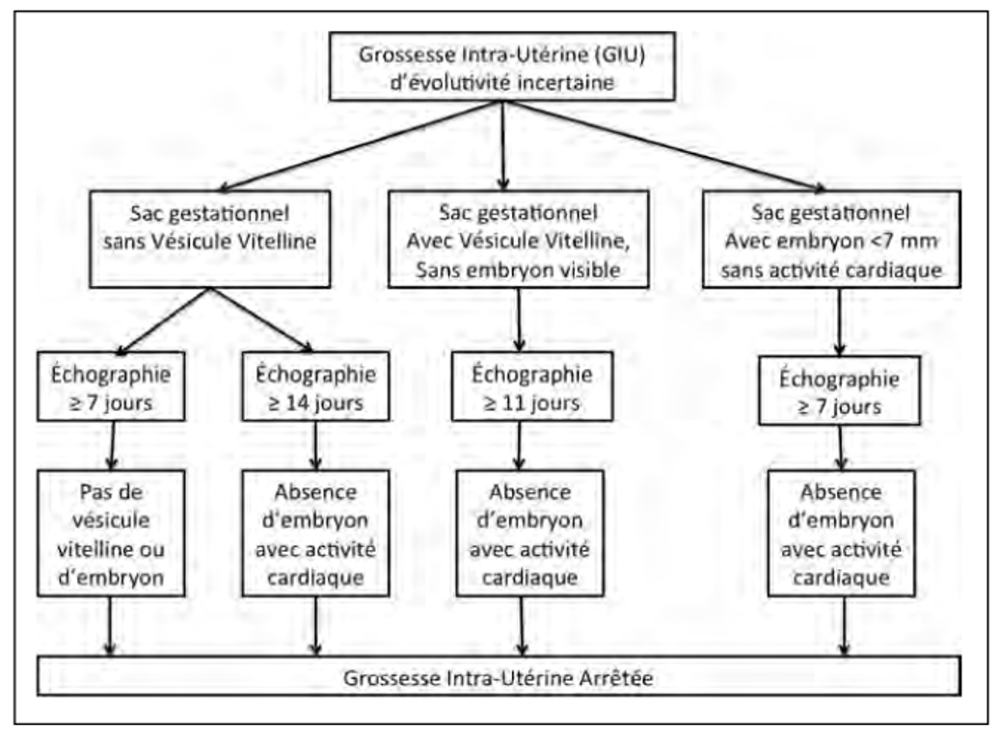

Menace de FCS (+ /- hématome sous-chorial)
SG < 20 mm et/ou embryon < 5 mm sans AC visualisée
Contrôle échographique de l’évolutivité à 7/10 jours
Anti-D si Rhésus négatif en cas de métrorragies
Hémorragique
Non hémorragique
(SG +/- en voie d’expulsion)
Aspiration chirurgicale en urgence
Expectative :
Antalgiques (AINS,paracétamol)
Contrôle échographique de l’expulsion du SG. Si non-expulsion,traitement chirurgical ou médical.
Amendement des douleurs et des saignements, col fermé
Vacuité utérine probable : endomètre échogène, homogène (mesure AP < 15 mm)
Expulsion de produit de conception
Grossesse de localisation incertaine : Grossesse intra-utérine préalable non connue, absence de recueil de matériel d’expulsion.
Analyse histologique du produit d’expulsion
hCG plasmatiques le jour même et à 48 h (afin de ne pas méconnaître une GEU).
SG expulsé
Images intra-utérines hyperéchogènes (mesure AP > 15 mm)
Saignements importants et/ou douleurs
Amendement des douleurs expulsives et des saignements, col ouvert.
Aspiration chirurgicale
Expectative :
Saignements et/ou douleurs modérées, col fermé
SG>20mmvide
Ou embryon sans AC > 5 mm
Ou SG hypotonique, hétérogène, non évolutif à une semaine
Dans les 48 h (après bilan et consultation ARE)
Anesthésie locale possible
Critères d’exclusion
Repos (arrêt de travail), information éclairée - Prescription d’antalgiques (AINS, paracétamol)
Pas de bilan ni de consultation ARE systématique
MisoOne® 400μg PO 3 fois par jour 48h
Réévaluation à 1 semaine et 1 mois, quelle que soit la mesure AP des images hyperéchogènes intra-utérines.
Indications de geste chirurgical : persistance de saignements abondants.
SG : sac gestationnel, mesure AP : mesure antéro-postérieure sur une coupe sagittale
AC : activité cardiaque embryonnaire
a: Consignes de consultation en urgence en cas d’expectative : persistance de saignements abondants (> règles), apparition de douleurs et/ou de fièvre.
b: Critères d’exclusion du traitement médical:LCC > 30 mm et/ou SG > 40 mm de diamètre moyen, domiciliée > 30 minutes de l’hôpital, impossibilité d’être accompagnée quelle que soit l’heure.
c: Informations à donner aux patientes : risques de l’expulsion spontanée (saignements, douleurs expulsives) et d’un geste chirurgical complémentaire (absence d’expulsion complète, fausse couche hémorragique), éventuels effets secondaires digestifs, nécessité d’une surveillance ambulatoire clinique et échographique.
Royal College of Obstetricians and Gynaecologists. The management of earlypregnancyloss. ROCG guideline n° 25. London : ROCG Press ; 2006.
Beucher G et al. Prise en charge des fausses couches spontanées du premier trimestre. GynecolObstetFertil 2009 ; 37 : 257-64.
Sotiriadis et al. Expectant, medical or surgical management of first trimestermiscarriage : a meta-analysis. ObstetGynecol 2005. 105 : 1104-13.
Recommandation temporaire d’utilisation du misoprostol ANSM février 2018
Recommandation perte de grossesse CNGOF 2014